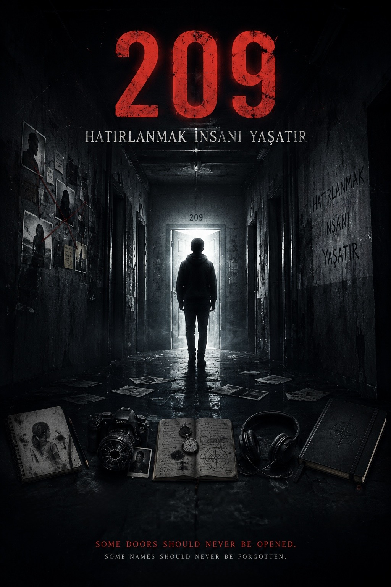
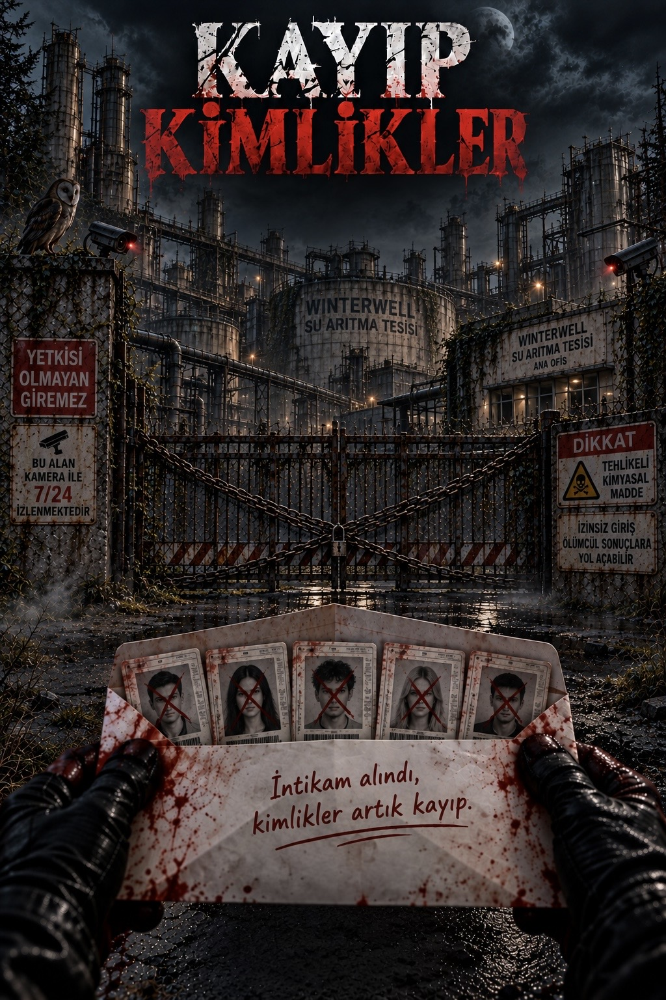

209 – Hatırlanmak İnsanı Yaşatır
209-Hatırlanmak İnsanı Yaşatır adlı eseri 2026 yılında yayımlanmıştır. Yazarın ilk kitabıdır.
KOBO’DA GÖRÜNTÜLE →Yılmaz Küpeli, roman türünde eserler kaleme alan genç bir yazardır. Yazarlık çalışmalarında gerilim, gizem ve karakter odaklı hikâyelere yer vermektedir.
18 yaşındaki Küpeli, eserlerini okuyucularla dijital kitap platformları üzerinden buluşturmaktadır.

209-Hatırlanmak İnsanı Yaşatır adlı eseri 2026 yılında yayımlanmıştır. Yazarın ilk kitabıdır.
KOBO’DA GÖRÜNTÜLE →
Kayıp Kimlikler adlı eseri 2026 yılında yayımlanmıştır. Kitap, Winterwell’de geçen gizemli bir olayı ve altı kişinin hayatını konu almaktadır. Yazarın ikinci kitabıdır.
KOBO’DA GÖRÜNTÜLE →Bu site, Yılmaz Küpeli'nin yazarlık çalışmaları, kitapları ve gelecekte yayımlanacak eserleri hakkında bilgi vermek amacıyla hazırlanmıştır.